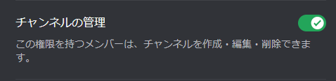
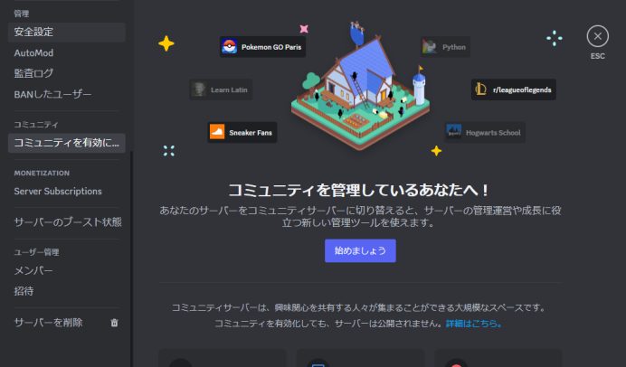

Frequently Asked Questions
＜ コマンド名： /search | /niconico | /ytsearch ＞
・このエラーは現在レート制限であるか、一日の実行数を超えた際に表示されます。
一日を経過するとリセットされ、再度使用可能になります。
・または入力した文字列が正しくない可能性があります。
＜ コマンド名： /news ＞
・このエラーは一日の実行数を超えた際に表示されるエラーです
一日を経過するとリセットされ、再度使用可能になります。
＜ コマンド名： /channelcreate | /ticket ＞
・このエラーはボットにチャンネルを作成する権限がないとき表示されます。
このコマンドを使う場合はボットに権限を付与してください(画像下)

※アナウンスチャンネルとステージチャンネルを作成する場合は、※
※サーバーのコミュニティ設定がオンになっていないと作成できません。※

＜ コマンド名： /rolecreate ＞
・このエラーはボットにロールを作成する権限がないとき表示されます。
このコマンドを使う場合はボットに権限を付与してください(画像下)
＜ コマンド名： /banlist ＞
・このエラーはボットがサーバー内のBANされているユーザー取得できないときに表示されます。
このコマンドを使う場合はボットに権限を付与してください(画像下)
＜ ボットのプロフィール内のリンクを開くことができない時 ＞
・スマホ版のDiscordでプロフィールからURLを開くことが出来ない時は
KainBotにて /about と入力することでリンクにアクセスすることができます。